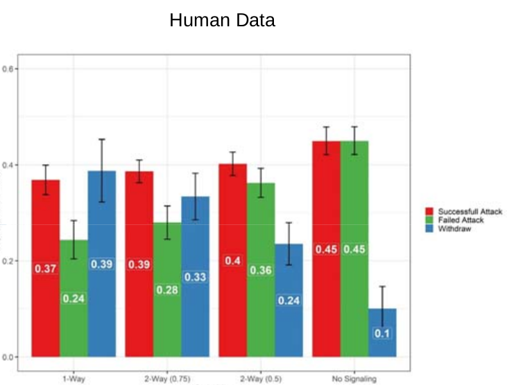

Box game example¶
In this game we describe an experiment involving the player having to make two different, though interrelated, decisions at each round. This corresponds to some so far unpublished work in the DDMLab, a highly stylized example of a cyber defense task.
In this game the player is given a choice of opening one of two boxes, 1 or 2, one of which contains a reward. An automated defender is defending one of the boxes, but it can defend only one. The player first chooses the box they are considering opening, but does not yet open it. The player is then given feedback by the defender, potentially warning that the box is defended; however this warning may or may not be true. The player then chooses whether or not to open the box. Opening an actually undefended box that contains the reward earns the player 100 points. Opening a box that is truly defended costs the player 50 points. Not opening a box, or opening a box that does not contain the reward has no effect on the player’s score.
We consider four conditions for this task. In each of these conditions there is a probability of 0.5 that the reward will be in box 1, and otherwise it will be in box 2. In the first three conditions there is also a probability of 0.5 that a particular box is defended. These three conditions differ in the probability of the user being told that the box is defended.
[more to come]
The source file for this experiment and model can
:download:be downloaded </_downloads/box-game.zip>`.
To run this install the dependencies from the requirements.txt file and then simply call Python on the box_game.py source file.
It will take few minutes to complete, and will then display a graph of the results, assuming matplotlib is correctly configured for your machine.
1# Copyright 2019–2025 Carnegie Mellon University
2# Example of a two stage decision task modeled using PyIBL.
3
4import click
5import csv
6from itertools import count
7import matplotlib.pyplot as plt
8import numpy as np
9import pyibl
10import random
11from tqdm import tqdm
12
13DEFAULT_ROUNDS = 50
14DEFAULT_PARTICIPANTS = 1000
15DEFAULT_NOISE = 0.25
16DEFAULT_DECAY = 0.5
17DEFAULT_TEMPERATURE = 1
18LOGFILE = "box-game-log.csv"
19
20CONDITIONS = [{"name": n, "p": p, "q": q} for n, p, q in [("1 way", 1, 0.5),
21 ("2 way (0.75)", 0.75, 0.375),
22 ("2 way (0.5)", 0.5, 0.25),
23 ("no signaling", None, None)]]
24
25def run(condition, rounds=DEFAULT_ROUNDS, participants=DEFAULT_PARTICIPANTS,
26 noise=DEFAULT_NOISE, decay=DEFAULT_DECAY, temperature=DEFAULT_TEMPERATURE,
27 logwriter=None, progress=None):
28 for c in CONDITIONS:
29 if c["name"] == condition:
30 cond_p = c["p"]
31 cond_q = c["q"]
32 break
33 else:
34 raise ValueError(f"Unknown condition {condition}")
35 selection_agent = pyibl.Agent(noise=noise, decay=decay, temperature=temperature)
36 attack_agent = pyibl.Agent(attributes=(["attack"] + ([] if cond_p is None else ["warning"])),
37 noise=noise, decay=decay, temperature=temperature)
38 successful_attacks = 0
39 failed_attacks = 0
40 withdrawals = 0
41 if cond_p is None:
42 attack_agent.populate ([{"attack": False}],
43 0)
44 else:
45 attack_agent.populate ([{"attack": False, "warning": 0},
46 {"attack": False, "warning": 1}],
47 0)
48 for v in [100, -50]:
49 selection_agent.populate([0, 1], v)
50 if cond_p is None:
51 attack_agent.populate([{"attack": True}],
52 v)
53 else:
54 attack_agent.populate([{"attack": True, "warning": 0},
55 {"attack": True, "warning": 1}],
56 v)
57 for p in range(participants):
58 total = 0
59 selection_agent.reset(True)
60 attack_agent.reset(True)
61 for r in range(rounds):
62 selected = selection_agent.choose((0, 1))
63 covered = random.random() < 0.5
64 if cond_p is None:
65 attack = attack_agent.choose([{"attack": True},
66 {"attack": False}])["attack"]
67 else:
68 if covered:
69 warned = int(random.random() < (1- cond_p))
70 else:
71 warned = int(random.random() < cond_q)
72 attack = attack_agent.choose([{"attack": True, "warning": warned},
73 {"attack": False, "warning": warned}])["attack"]
74 if not attack:
75 withdrawals += 1
76 payoff = 0
77 elif covered:
78 failed_attacks += 1
79 payoff = -50
80 else:
81 successful_attacks += 1
82 payoff = 100
83 total += payoff
84 attack_agent.respond(payoff)
85 selection_agent.respond(payoff)
86 logwriter.writerow([condition, p + 1, r + 1, selected,
87 (int(warned) if cond_p is not None else None),
88 int(covered), int(attack), payoff, total])
89 if progress:
90 progress.update()
91 return [n / (participants * rounds)
92 for n in [successful_attacks, failed_attacks, withdrawals]]
93
94@click.command()
95@click.option("--rounds", "-r", default=DEFAULT_ROUNDS,
96 help="number of rounds to play")
97@click.option("--participants", "-p", default=DEFAULT_PARTICIPANTS,
98 help="number of virtual participants to simulate")
99@click.option("--noise", "-n", default=DEFAULT_NOISE,
100 help="noise for the two agents")
101@click.option("--decay", "-d", default=DEFAULT_DECAY,
102 help="decay parameter for the two agents")
103@click.option("--temperature", "-t", default=DEFAULT_TEMPERATURE,
104 help="blending temperature for the two agents")
105def main(rounds, participants, noise, decay, temperature):
106 results = {"successful attack": [], "failed attack": [], "withdrew": []}
107 colors = ("red", "green", "blue")
108 with tqdm(total=(participants * len(CONDITIONS))) as p:
109 with open(LOGFILE, "w", newline="") as f:
110 w = csv.writer(f)
111 w.writerow("Condition,Subject,Trial,Selected,Warning,Covered,Action,Outcome,Cum_Outcome".split(","))
112 for c in CONDITIONS:
113 cname = c["name"]
114 r = run(cname, rounds=rounds, participants=participants,
115 noise=noise, decay=decay, temperature=temperature,
116 logwriter=w, progress=p)
117 for k, v in zip(results.keys(), r):
118 results[k].append(round(v, 2))
119 fig, ax = plt.subplots(layout='constrained')
120 x = np.arange(len(CONDITIONS))
121 wid = 0.25
122 for (kind, vals), mult, c in zip(results.items(), count(), colors):
123 offset = wid * mult
124 rects = ax.bar(x + offset, vals, wid, label=kind, color=c)
125 ax.bar_label(rects, padding=3)
126 mult += 1
127 ax.set_xticks(x + wid, [c["name"] for c in CONDITIONS])
128 ax.legend(loc="upper left", ncols=3)
129 ax.set_ylim(0, 0.6)
130 ax.set_title(f"{participants} participants, {rounds} rounds\n"
131 f"noise={noise}, decay={decay}, temperature={temperature}")
132 plt.show()
133
134
135if __name__ == "__main__":
136 main()
The heart of the model is the run function, which runs the model for one condition, using a specified number of rounds and virtual participants,
as well as the usual IBL parameters. After working out the various parameters to implement the given condition,
it allocates two PyIBL Agents, one for selecting the box to possibly be attacked, and the second to decide whether or not to attack it.
Note that the attributes of the second, attack, Agent differ slightly for the “no signaling” condition, as we do not want to record
whether or not a warning that the box is defended was issued. These agents are prepopulated with instances for the various possible
combinations of whether or not a box is selected, and whether or not it is attacked when a warning has or has not been given,
with the prepopulated values being one each of the best and worst possible results.
The model then proceeds by at each round first selecting which box to possibly attack, and then, having seen whether or not a warning is given, whether or not to attack. Once the resulting payoff is known both Agents are updated to reflect that payoff.
The main function calls run for each of the conditions, collects their results, and displays a bar graph comparing them.
The click module is used to provide the opportunity to run things with different numbers of rounds and participatns, as well as different
IBL parameters, though the default values of all are sensible.
Here is a graph of of the results when run with 1,000 participants and 50 rounds for each (the default values); note that when running
this yourself the results may differ slightly, since the model is, of course, stochastic, but the results should be similar:
The DDMLab has also run this task, with the same conditions, with an ensemble of human participants, with the following results:
